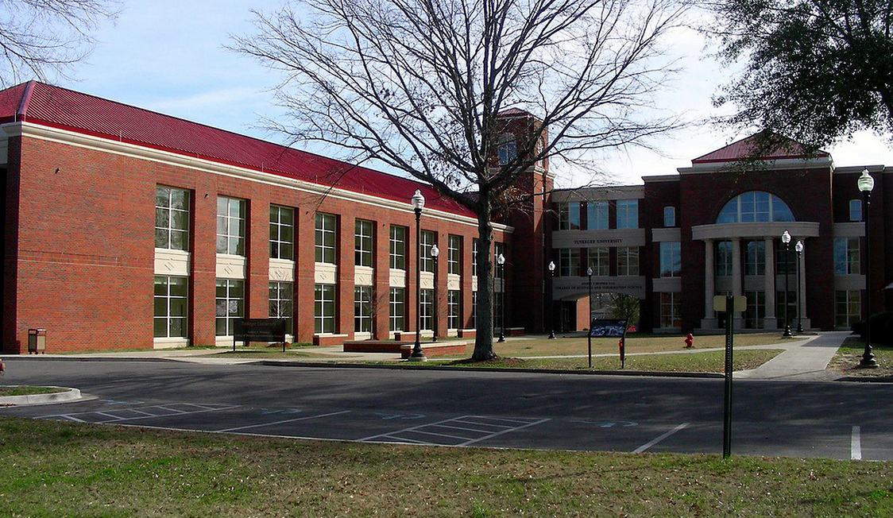

CBCPS Testbed
An experimental platform integrating autonomous ground vehicles, an inverted pendulum, a robotic arm, communication networks, and cloud computing.
NSF Research Initiation Award
Advancing secure and resilient cyber-physical systems through AI-enabled attack detection, adaptive control, experimental research, and student-centered education.

Research framework
The project connects physical devices, communications, and cloud intelligence in one integrated research and education environment.
An experimental platform integrating autonomous ground vehicles, an inverted pendulum, a robotic arm, communication networks, and cloud computing.
Machine learning and reinforcement learning methods for detecting attacks, adapting control decisions, and maintaining safe system operation.
A new undergraduate course, campus workshops, student research, high-school outreach, and openly available educational resources.
Principal investigator
Principal Investigator
Assistant Professor of Computer Science
Tuskegee University
Dr. Rahman’s research focuses on the security and resilience of cloud-based cyber-physical systems using artificial intelligence, machine learning, reinforcement learning, and networked control. He leads the project’s research, education, mentoring, and dissemination activities.
Contact the PIStudent researchers
The project supports collaborative research experiences spanning AI, cybersecurity, cloud computing, networking, and control systems.
Graduate Researcher
Research interests and project responsibilities will be added when available.
Graduate Researcher
Research interests and project responsibilities will be added when available.
Undergraduate Researcher
Research interests and project responsibilities will be added after team appointments are finalized.
Undergraduate Researcher
Research interests and project responsibilities will be added after team appointments are finalized.
Undergraduate Researcher
Research interests and project responsibilities will be added after team appointments are finalized.
Project activities
Establish the cloud, network, control, and cybersecurity layers and create baseline performance measurements.
Offer fall and spring learning sessions on cyber-physical systems, cloud security, AI, and resilient control.
Engage undergraduate and graduate researchers in experiment design, implementation, evaluation, and dissemination.
Share outcomes through high-school outreach, conference presentations, publications, and open educational materials.
Publications & products
Peer-reviewed articles, conference papers, datasets, software, and open educational resources will be listed here.
External evaluation
Project Evaluator
This evaluator supports independent assessment of project implementation, student outcomes, research progress, educational activities, and broader impacts.
Project Evaluator
This evaluator supports formative and summative review of the project’s research, education, mentoring, outreach, and dissemination activities.